ぶんぶん先生を倒した
公開日：
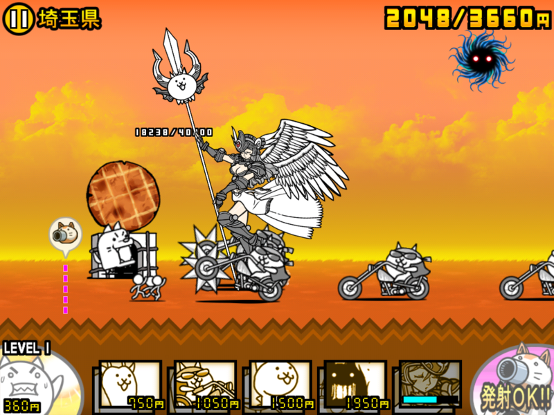
最近、弟に教えてもらった「にゃんこ大戦争」というゲームにハマっている（もっぱら iPad mini でプレイ）。
- iTunes App Storeで見つかる iPhone 3GS、iPhone 4、iPhone 4S、iPhone 5、iPod touch（第2世代）、iPod touch（第3世代）、iPod touch (第4世代)、iPod touch (第5世代)、およびiPad 対応のにゃんこ大戦争
- にゃんこ大戦争 - Google Play の Android アプリ
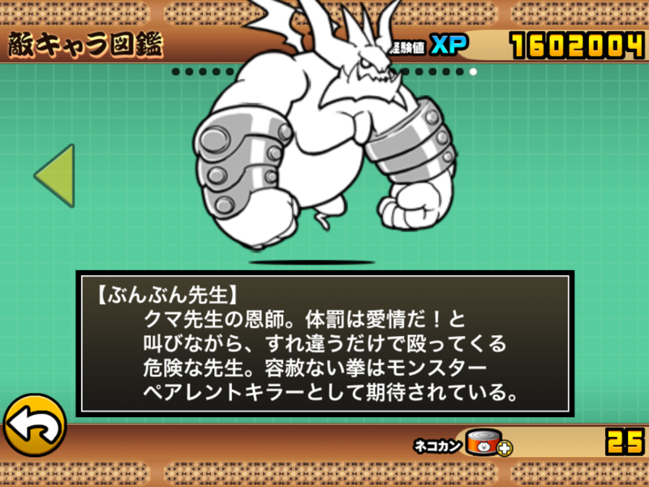
多彩な“にゃんこ”を従えて日本全国を征服するというディフェンス系のゲームなのだけど、どうも三面のラスボス“ぶんぶん先生”が強すぎて、なかなか倒せない。今回やっとこさ勝てたので、その方法をメモしておく。
前提条件
「にゃんこ大戦争」では、都道府県を征服すると“お宝（粗末な、普通の、最高の、の三種類）”が得られるのだが、それを集めることで“にゃんこ”たちの力が大幅にアップする。今回は、最高のお宝として
- 第1章のお宝（48/48）
- 第2章のお宝（35/48）
- 第3章のお宝（30/48）
だけ集めて挑戦した。“にゃんこ”の攻撃力と防御力、生産スピード短縮、“にゃんこ砲”のチャージ時間と威力、“働きネコ”のお金生産量アップといった戦闘に直結するお宝だけはかならずコンプリートしておくべし。
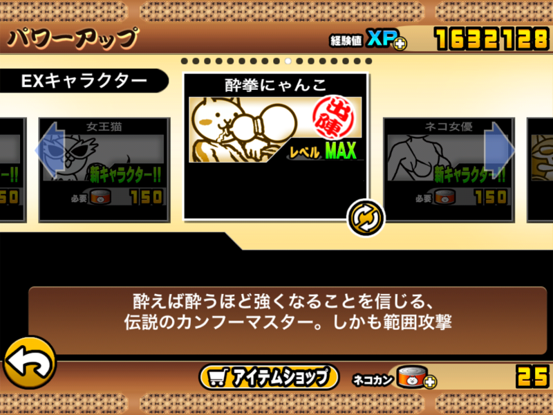
あと、ネコカン（ボーナスや課金で得られる）がないと取得できない“EX キャラクター”として、「カンフーにゃんこ（レベルアップすると、酔拳にゃんこになる）」を入手しておくと戦闘がだいぶ楽になる。こいつは中距離型なのに範囲攻撃、しかも攻撃力もトップクラスというチート性能を誇る（ただし、移動スピードと攻撃スピードは遅い）。
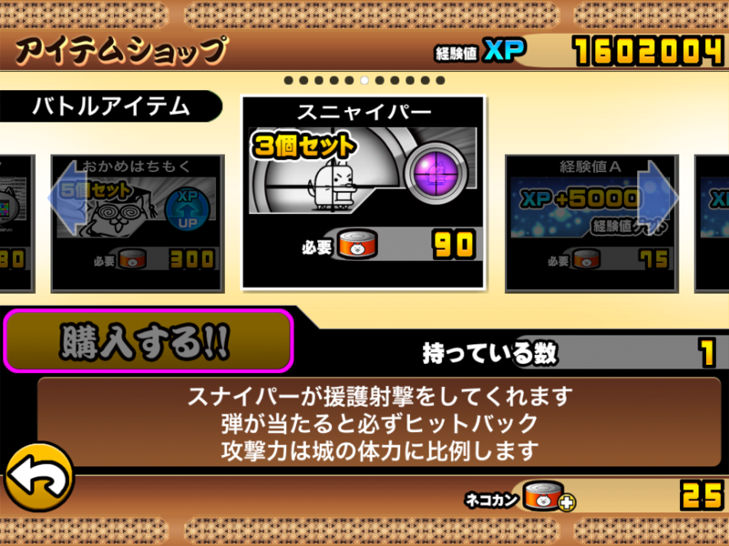
アイテムはあまり必要がないが、あえて言えば「スニャイパー」が少しだけ役に立つ。
基本的な戦略
戦略の基本は中距離攻撃キャラでひたすらノックバックを狙うこと。“ぶんぶん先生”は攻撃力が半端ないうえ、むちゃくちゃ攻撃速度が早くて、前衛が一瞬で蒸発していく。なので、比較的攻撃力の高い中距離・遠距離攻撃キャラでひたすらノックバック（後方へ吹っ飛ばすこと）させることにより前衛の損耗をなるべく抑えつつ、少しずつダメージを蓄積させていくしかない。
“カンフーにゃんこ”と「スニャイパー」を導入するのは、つまりはそういうこと。
部隊編成
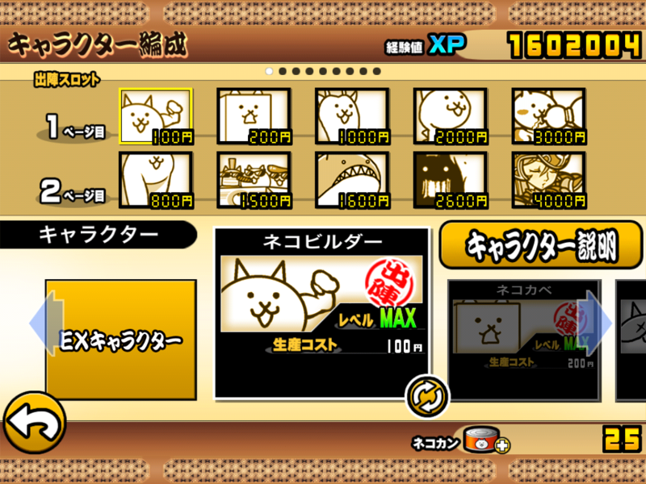
今回の部隊編成はこんな感じ。役割は大きく分けて3つ。
- 安価な使い捨て前衛：ネコビルダー、ネコカベ、（ネコキリン）
- 取り巻きのザコ一掃役：酔拳にゃんこ、ネコダラボッチ、（ネコワイルド）
- ノックバックのための中衛：ネコドラゴン
- ダメ押し火力要員：ネコヴァルキリー・真
ほかは比較的どうでもいいのだけど、ネコドラゴンの劣化版として美脚ネコ、赤い敵対策としてネコクジラを足しておいた。
作戦進行
序盤
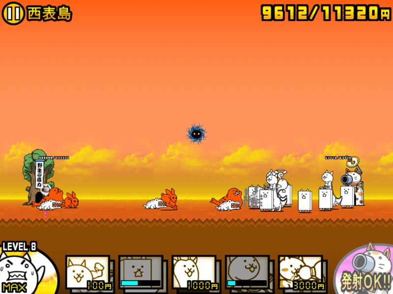
敵をギリギリまで引きつけてネコカベを出す。攻撃キャラはネコドラゴンのみ。ネコドラゴンを“絶え間なく”生産することに専念しながら、ネコカベの生産と働きネコのレベルアップにおカネを使う。序盤はこの2種類だけ出しておけばいい。
これが軌道に乗ると、戦線を徐々に前進させていくことができるはず。敵との交戦ラインでネコドラゴンとネコカベのデススタック（まぁ、この場合密集隊形やな）ができていれば序盤の作戦は成功。
中盤
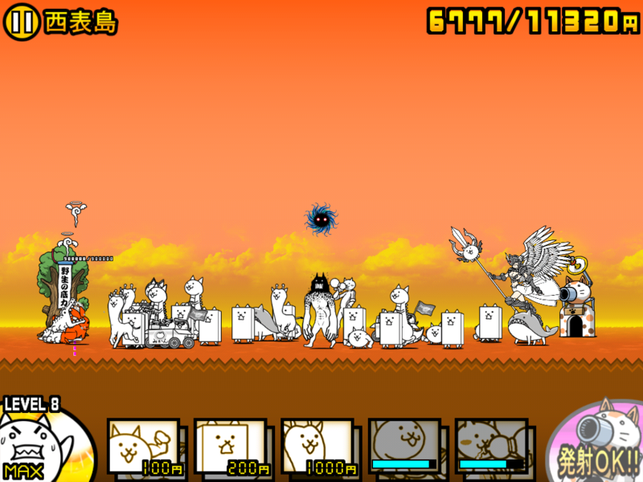
序盤の戦略を継続しつつ、自分の城と相手の城の間の半分を過ぎたあたりから、酔拳にゃんこやネコダラボッチなどの生産も行う。ネコビルダーも出して、ネコカベの行列の隙間を埋める。ネコキリンやネコワイルドは移動スピードが速いので、崩れかけた前線を補修するのに役立つ。
ただし、ネコヴァルキリーだけは戦線が相手の城に到着する寸前まで我慢。ネコヴァルキリーは結構強いので、あまり早く出し過ぎるとネコドラゴンが足りないまま、ぶんぶん先生と対峙する羽目になる。
同じ理由でにゃんこ砲も我慢。使ってしまうとネコドラゴンとネコカベのスタックが作れない。
終盤
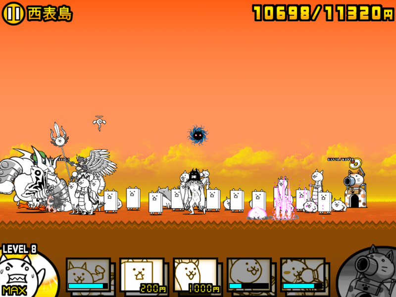
城を殴り始めると、直にぶんぶん先生が登場。そこへすかさずにゃんこ砲をぶち込む。あとはネコビルダー、ネコカベ、ウシネコ、ネコワイルドを送り込んで前線の崩壊を食い止めつつ、後衛の補充も行う。つまり、ほとんどボタンの連打状態になる。
最初に送り込んだネコドラゴンたちが全滅したらほぼ負け。
ネコドラゴンがぶんぶん先生をノックバックさせた隙を、前衛キャラで絶え間なく埋める。そんな感じでひたすら頑張る。取り巻きのザコ敵の排除を怠るとネコドラゴンの火力がそっちに分散してしまうので、ネコワイルド・酔拳にゃんこ・ネコダラボッチ・ネコヴァルキリーなど、範囲攻撃をもつキャラで適宜排除するのも忘れずに。
耐える時間の目安は、にゃんこ砲のチャージがもう一度溜まるまでか。うまくいけば2つ目を発射する前にぶんぶん先生を倒せる。
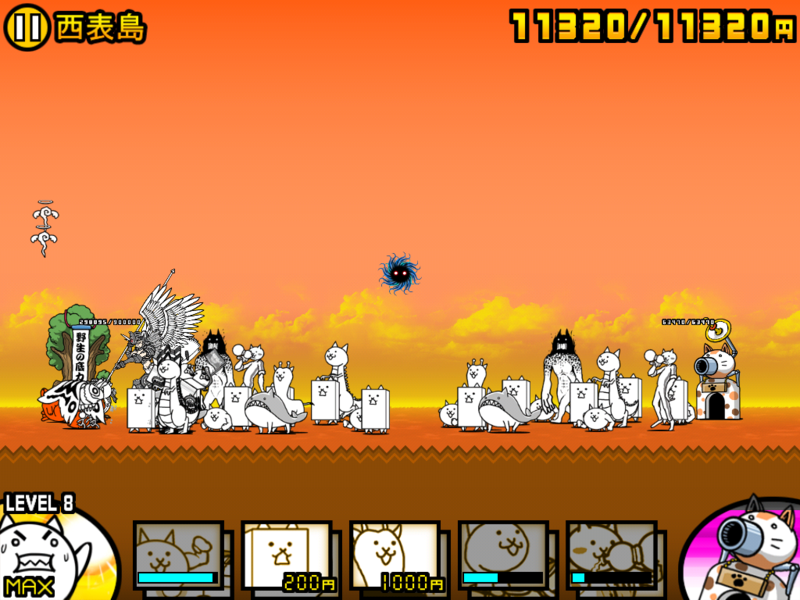
あとは残敵掃討。お疲れさま。
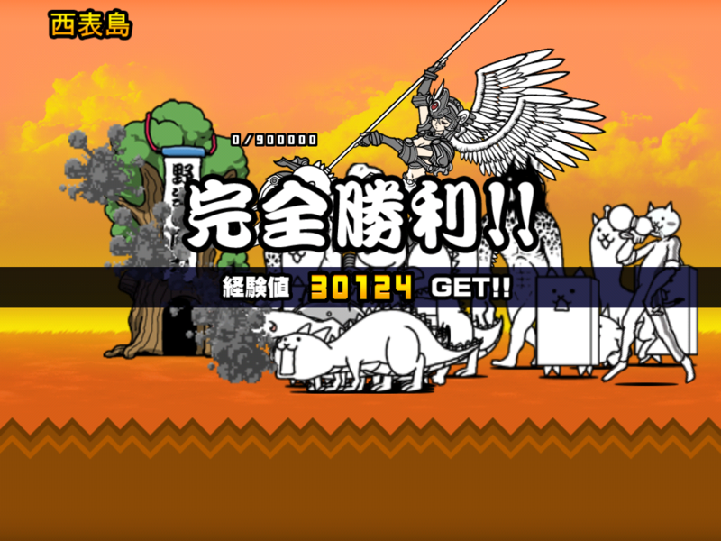
次は EX キャラクターなしのクリアにもチャレンジしてみたいな。
おまけ
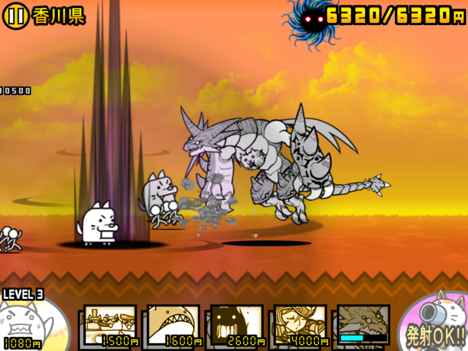
第3章のクリアでもらえるネコムートは強いけど、第4章が実装されないことにはつかいどころがない！